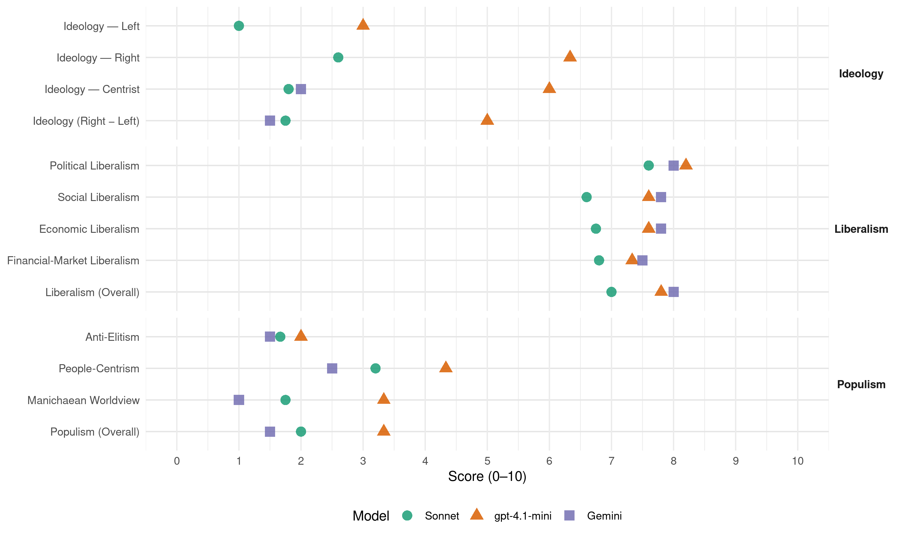

PP (Spain, 2015)
manifesto_id 33610_201512
Get full text: This site shows derived annotations and short verbatim quotes only. The full manifesto text is © Manifesto Project / WZB — obtain it via manifesto-project.wzb.eu using the manifesto_id above.
Headline scores
| Dimension | Sonnet | gpt-4.1-mini | Gemini |
|---|---|---|---|
| Populism (Overall) | 2.0 | 3.3 | 1.5 |
| Anti-Elitism | 1.7 | 2.0 | 1.5 |
| People-Centrism | 3.2 | 4.3 | 2.5 |
| Manichaean Worldview | 1.8 | 3.3 | 1.0 |
| Ideology (Right − Left) | 1.8 | 5.0 | 1.5 |
| Liberalism (Overall) | 7.0 | 7.8 | 8.0 |
| Political Liberalism | 7.6 | 8.2 | 8.0 |
| Social Liberalism | 6.6 | 7.6 | 7.8 |
| Economic Liberalism | 6.8 | 7.6 | 7.8 |
| Financial-Market Liberalism | 6.8 | 7.3 | 7.5 |
Evidence per dimension
Economic Liberalism
Gemini · score 9.0 · verified · chunk 1
“apertura, reforma, liberalización y competitividad”
fiel a la “receta” históricamente contrastada de apertura, reforma, liberalización y competitividad, hemos avanzado en el
Gemini · score 8.0 · verified · chunk 2
“plena efectividad del mercado único europeo”
Impulsaremos activamente la plena efectividad del mercado único europeo, que fomente la eficiencia
Gemini · score 7.0 · verified · chunk 3
“fomentar el empleo y el emprendimiento”
talento posible, de hombres y mujeres, a nuestro mercado de trabajo, fomentar el empleo y el emprendimiento femenino, avanzar hacia
Gemini · score 7.0 · verified · chunk 4
“reducción de las trabas burocráticas”
simplificando procedimientos y suprimiendo trabas burocráticas. La Administración será más sencilla
Gemini · score 8.0 · verified · chunk 5
“Tratado de Libre Comercio”
Apoyaremos decididamente el Tratado de Libre Comercio con Estados Unidos, TTIP, que permitirá
gpt-4.1-mini · score 9.0 · verified · chunk 1
“Siempre que España ha permanecido fiel a la “receta” históricamente contrastada de apertura, reforma, liberalización y competitividad, hemos avanzado”
Desde que el Partido Popular asumió la responsabilidad de Gobierno, los errores de diagnóstico y de decisión en la política económica han sido sustituidos por un modelo económico que ya está dando resultados positivos. Siempre que España ha permanecido fiel a la “receta” históricamente contrastada de apertura, reforma, liberalización y competitividad, hemos avanzado en el proceso de convergencia en bienestar y riqueza con las economías más desarrolladas.
gpt-4.1-mini · score 7.0 · verified · chunk 2
“apoyar el crecimiento económico y el empleo”
…un sistema fiscal eficiente, que apoye el crecimiento económico y el empleo. Con las medidas que proponemos esperamos dar un impulso adicional a la recuperación económica,…
gpt-4.1-mini · score 7.0 · verified · chunk 3
“la reforma fiscal ha beneficiado de un modo especial a las familias”
La reforma fiscal ha beneficiado de un modo especial a las familias en las que viven personas con discapacidad. Hemos aprobado el Plan de Acción 2014-2016 sobre la Estrategia de Discapacidad, dotado con 3.093 millones de euros y compuesto por 96 medidas que avanzan en igualdad, empleo, educación, accesibilidad y dinamización de la economía.
gpt-4.1-mini · score 7.0 · verified · chunk 4
“reforma de la Ley de Contratos del Sector Público para incrementar los controles”
Impulsaremos la reforma de la Ley de Contratos del Sector Público para incrementar los controles y cerrar cualquier espacio a posibles irregularidades u opacidades.
gpt-4.1-mini · score 8.0 · verified · chunk 5
“apoyaremos la firma de Acuerdos comerciales con terceros países”
14 �Promoveremos la firma de Acuerdos comerciales con terceros países y grupos de países. �La celebración de estos acuerdos comerciales favorecerá la creación de empleo,�las oportunidades de negocio y la competitividad de la economía europea en su conjunto.
Sonnet · score 7.0 · verified · chunk 2
“reducir la carga impositiva de las familias”
el Partido Popular trabajará para reducir la carga impositiva de las familias, los discapacitados, los jóvenes y las personas mayores
Sonnet · score 6.0 · verified · chunk 3
“economías de escala y mejorando la eficiencia”
Vamos a seguir extendiendo las compras centralizadas que permitan las economías de escala y mejorando la eficiencia y el uso de los recursos públicos
Sonnet · score 7.0 · verified · chunk 4
“reducción de la burocracia”
posibiliten la supresión de cargas administrativas, la eliminación de duplicidades, la reducción de la burocracia y el impulso de la flexibilidad
Sonnet · score 7.0 · verified · chunk 5
“Mercado Único Europeo”
Impulsaremos las ventajas que nos ofrece el Mercado Único Europeo, trabajando para que este se extienda a todas las áreas de la economía.
Financial-Market Liberalism
Gemini · score 8.0 · verified · chunk 1
“sistema financiero sólido y solvente que”
disfrutando de un sistema financiero sólido y solvente que facilite el crédito y garantice el ahorro
Gemini · score 8.0 · verified · chunk 2
“integración de los mercados de capitales”
profundizando en la Unión Bancaria y en la integración de los mercados de capitales.
Gemini · score 7.0 · verified · chunk 3
“donaciones de las empresas a las fuerzas políticas”
una Ley que, por primera vez, prohíbe las donaciones de las empresas a las fuerzas políticas y pone fin a las condonaciones de las deudas de los partidos políticos con entidades financieras.
Gemini · score 7.0 · verified · chunk 5
“integración de los mercados de capitales”
profundizando en la Unión Bancaria y la integración de los mercados de capitales. Promoveremos la plena
gpt-4.1-mini · score 8.0 · verified · chunk 1
“El nuevo crédito a pymes crece a ritmos superiores al 16% y se acumulan 24 meses de subidas consecutivas”
Los resultados de este proceso de reestructuración han llegado ya con claridad. El nuevo crédito a pymes crece a ritmos superiores al 16% y se acumulan 24 meses de subidas consecutivas, mientras que los préstamos para hogares lo hacen a tasas cercanas al 30%.
gpt-4.1-mini · score 7.0 · verified · chunk 2
“profundizando en la Unión Bancaria y en la integración de los mercados de capitales”
…Trabajaremos para afianzar un sector financiero europeo estable y seguro, profundizando en la Unión Bancaria y en la integración de los mercados de capitales. Daremos especial atención a la integración del segmento minorista de la banca europea,…
gpt-4.1-mini · score 7.0 · verified · chunk 5
“hemos impulsado el Pacto Europeo para el Crecimiento y Empleo, así como la Iniciativa de Empleo Juvenil”
Se ha creado la Unión Bancaria y el Mecanismo Único de Supervisión. Hemos impulsado el Pacto Europeo para el Crecimiento y Empleo, así como la Iniciativa de Empleo Juvenil. Se han fortalecido los mecanismos de gobernanza económica mediante una reforma del Pacto de Estabilidad y Crecimiento; se ha creado el Mecanismo Europeo de Estabilidad para asistir a los países en dificultades financieras y se ha puesto en marcha el Plan Juncker de Inversiones, a fin de movilizar 315.000 millones de euros de inversión público-privada.
Sonnet · score 8.0 · verified · chunk 1
“mayor grado de transparencia y conveniencia”
Dotaremos a los productos financieros del mayor grado de transparencia y conveniencia para el usuario, facilitando su capacidad para tomar decisiones informadas.
Sonnet · score 7.0 · verified · chunk 2
“integración de los mercados de capitales”
Trabajaremos para afianzar un sector financiero europeo estable y seguro, profundizando en la Unión Bancaria y en la integración de los mercados de capitales
Sonnet · score 6.0 · verified · chunk 3
“educación financiera”
Fomentaremos la educación financiera, tanto en su vertiente preventiva, a través de la educación formal u otras herramientas de formación
Sonnet · score 6.0 · verified · chunk 4
“control de las cláusulas abusivas en los préstamos hipotecarios”
Incrementaremos el control de las cláusulas abusivas en los préstamos hipotecarios que acceden al Registro y aseguraremos que los clientes conocen con precisión las obligaciones
Sonnet · score 7.0 · verified · chunk 5
“integración de los mercados de capitales”
Impulsaremos un sector financiero estable y seguro, profundizando en la Unión Bancaria y la integración de los mercados de capitales.
Political Liberalism
Gemini · score 8.0 · verified · chunk 1
“asienta nuestra democracia. El Partido Popular”
La unidad de la nación española es el principio sobre el que se asienta nuestra democracia. El Partido Popular garantiza y
Gemini · score 8.0 · verified · chunk 2
“legitimidad democrática y la rendición de cuentas”
cambios institucionales para incrementar la legitimidad democrática y la rendición de cuentas de las instituciones
Gemini · score 8.0 · verified · chunk 3
“valores democráticos de nuestra Constitución”
defendiendo el imperio de la ley y los valores democráticos de nuestra Constitución. El Partido Popular reafirma
Gemini · score 8.0 · verified · chunk 4
“garante de la libertad y la igualdad”
En un Estado de Derecho, la Justicia es el verdadero garante de la libertad y la igualdad de los ciudadanos.
Gemini · score 8.0 · verified · chunk 5
“respeto al Estado de Derecho”
promoviendo la confianza entre Estados Miembros en torno al respeto al Estado de Derecho y a las normas democráticas.
gpt-4.1-mini · score 8.0 · verified · chunk 1
“La regeneración democrática ha sido uno de los ejes principales de nuestro programa reformista de Gobierno”
Un compromiso permanente de regeneración de la vida pública. La regeneración democrática ha sido uno de los ejes principales de nuestro programa reformista de Gobierno. Somos el gobierno que más medidas y más reformas ha acometido para prevenir, perseguir y sancionar la corrupción.
gpt-4.1-mini · score 8.0 · verified · chunk 2
“garantizar la igualdad de derechos sanitarios de todos los españoles”
…un modelo de financiación de la sanidad que garantice la cobertura de las necesidades reales, equilibrado y que tenga en cuenta la edad y la dispersión de la población y garantice la igualdad de derechos sanitarios de todos los españoles;…
gpt-4.1-mini · score 8.0 · verified · chunk 3
“la primera Ley de Transparencia de nuestra democracia”
Hoy hay más derechos para los ciudadanos, como el refuerzo del acceso a la información pública recogido en la primera Ley de Transparencia de nuestra democracia, que ha puesto a disposición pública más de 850.000 registros de datos que ya están disponibles en el Portal de la Transparencia.
gpt-4.1-mini · score 8.0 · verified · chunk 4
“la Justicia siga siendo una institución de referencia”
El compromiso del Partido Popular es que la Justicia siga siendo una institución de referencia, cumpliendo con su misión de servicio público. Para ello, debemos seguir profundizando las reformas emprendidas y,
gpt-4.1-mini · score 9.0 · verified · chunk 5
“defenderemos la democracia y los derechos y libertades de los ciudadanos”
5 �Defenderemos la democracia y los derechos y libertades de los ciudadanos. Por eso nuestro diálogo será crítico con todos aquellos que ponen en riesgo la democracia y la libertad. 6 Continuaremos apoyando a las instituciones que trabajan en el ámbito de la defensa y protección de los Derechos Humanos, como la Comisión Internacional contra la Pena de Muerte y la oficina del Alto Comisionado de la ONU para los Derechos Humanos.
Sonnet · score 7.0 · verified · chunk 1
“La regeneración democrática ha sido uno”
La regeneración democrática ha sido uno de los ejes principales de nuestro programa reformista de Gobierno. Somos el gobierno que más medidas y más reformas ha acometido para prevenir, perseguir y sancionar la corrupción.
Sonnet · score 7.0 · verified · chunk 2
“legitimidad democrática y la rendición de cuentas”
deben, por tanto, venir acompañados de cambios institucionales para incrementar la legitimidad democrática y la rendición de cuentas de las instituciones europeas
Sonnet · score 8.0 · verified · chunk 3
“calidad de nuestra democracia”
Queremos seguir avanzando en cuantas reformas permitan ganar calidad y madurez a nuestra democracia, reforzando el papel de las Cortes Generales
Sonnet · score 8.0 · verified · chunk 4
“independencia del Consejo General del Poder Judicial”
Promoveremos un acuerdo de todas las fuerzas políticas que garantice la independencia del Consejo General del Poder Judicial
Sonnet · score 8.0 · verified · chunk 5
“democracia y los derechos y libertades”
Defenderemos la democracia y los derechos y libertades de los ciudadanos. Por eso nuestro diálogo será crítico con todos aquellos que ponen en riesgo la democracia y la libertad.
Liberalism (Overall)
Gemini · score 8.0 · verified · chunk 1
“apertura, reforma, liberalización y competitividad”
fiel a la “receta” históricamente contrastada de apertura, reforma, liberalización y competitividad, hemos avanzado en el
Gemini · score 8.0 · verified · chunk 2
“plena efectividad del mercado único europeo”
Impulsaremos activamente la plena efectividad del mercado único europeo, que fomente la eficiencia
Gemini · score 8.0 · verified · chunk 3
“valores democráticos de nuestra Constitución”
defendiendo el imperio de la ley y los valores democráticos de nuestra Constitución. El Partido Popular reafirma
Gemini · score 8.0 · verified · chunk 4
“garante de la libertad y la igualdad”
En un Estado de Derecho, la Justicia es el verdadero garante de la libertad y la igualdad de los ciudadanos.
Gemini · score 8.0 · verified · chunk 5
“respeto al Estado de Derecho”
promoviendo la confianza entre Estados Miembros en torno al respeto al Estado de Derecho y a las normas democráticas.
gpt-4.1-mini · score 8.0 · verified · chunk 1
“La regeneración democrática ha sido uno de los ejes principales de nuestro programa reformista de Gobierno”
Un compromiso permanente de regeneración de la vida pública. La regeneración democrática ha sido uno de los ejes principales de nuestro programa reformista de Gobierno. Somos el gobierno que más medidas y más reformas ha acometido para prevenir, perseguir y sancionar la corrupción.
gpt-4.1-mini · score 8.0 · verified · chunk 2
“garantice la igualdad de derechos sanitarios de todos los españoles”
…un modelo de financiación de la sanidad que garantice la cobertura de las necesidades reales, equilibrado y que tenga en cuenta la edad y la dispersión de la población y garantice la igualdad de derechos sanitarios de todos los españoles;…
gpt-4.1-mini · score 8.0 · verified · chunk 3
“la primera Ley de Transparencia de nuestra democracia”
Hoy hay más derechos para los ciudadanos, como el refuerzo del acceso a la información pública recogido en la primera Ley de Transparencia de nuestra democracia, que ha puesto a disposición pública más de 850.000 registros de datos que ya están disponibles en el Portal de la Transparencia.
gpt-4.1-mini · score 7.0 · verified · chunk 4
“la Justicia siga siendo una institución de referencia”
El compromiso del Partido Popular es que la Justicia siga siendo una institución de referencia, cumpliendo con su misión de servicio público. Para ello, debemos seguir profundizando las reformas emprendidas y,
gpt-4.1-mini · score 8.0 · verified · chunk 5
“defenderemos la democracia y los derechos y libertades de los ciudadanos”
5 �Defenderemos la democracia y los derechos y libertades de los ciudadanos. Por eso nuestro diálogo será crítico con todos aquellos que ponen en riesgo la democracia y la libertad. 6 Continuaremos apoyando a las instituciones que trabajan en el ámbito de la defensa y protección de los Derechos Humanos, como la Comisión Internacional contra la Pena de Muerte y la oficina del Alto Comisionado de la ONU para los Derechos Humanos.
Sonnet · score 7.0 · verified · chunk 2
“plena efectividad del mercado único europeo”
Impulsaremos activamente la plena efectividad del mercado único europeo, que fomente la eficiencia y dote de mayor estabilidad a los países miembros
Sonnet · score 7.0 · verified · chunk 3
“calidad de nuestra democracia”
Queremos seguir avanzando en cuantas reformas permitan ganar calidad y madurez a nuestra democracia, reforzando el papel de las Cortes Generales
Sonnet · score 7.0 · verified · chunk 4
“Estado de Derecho”
El Partido Popular combatirá cualquier manifestación del terrorismo desde la firmeza y la contundencia del Estado de Derecho
Sonnet · score 7.0 · verified · chunk 5
“libertad, justicia, democracia y defensa”
política exterior que refleja los principios y valores de libertad, justicia, democracia y defensa de los Derechos Humanos en todos los foros multilaterales
Anti-Elitism
Gemini · score 1.0 · verified · chunk 1
“evitan injerencias políticas no justificadas”
decisiones de negocio y estableciendo mecanismos de gobierno corporativo que evitan injerencias políticas no justificadas en las mismas.
Gemini · score 2.0 · verified · chunk 2
“los mismos que hoy enarbolan la bandera”
al tiempo que los mismos que hoy enarbolan la bandera de los derechos sociales les negaban la oportunidad
gpt-4.1-mini · score 2.0 · verified · chunk 1
“Frente al inmovilismo o la inexperiencia”
Frente al inmovilismo o la inexperiencia, las políticas económicas del Partido Popular han demostrado que dan los resultados que reclaman los ciudadanos: empleo, prosperidad y bienestar.
gpt-4.1-mini · score 2.0 · verified · chunk 3
“Los casos de corrupción que hemos sufrido”
Los casos de corrupción que hemos sufrido en los últimos tiempos han hecho mella en el prestigio de la política como noble vocación de servicio público.
gpt-4.1-mini · score 2.0 · verified · chunk 4
“rechazo de la sociedad”
gracias a la cooperación internacional, gracias al rechazo de la sociedad, y gracias, sobre todo, al testimonio de las víctimas.
Sonnet · score 3.0 · verified · chunk 1
“ocultan los verdaderos costes de sus proyectos”
Hoy vuelven a escucharse las propuestas de quienes afirman ser capaces de mantener el bienestar, pero una vez más ocultan los verdaderos costes de sus proyectos, que finalmente sufrirían los españoles.
Sonnet · score 2.0 · mixed · chunk 2
“los mismos que hoy enarbolan la bandera de los derechos sociales”
al tiempo que los mismos que hoy enarbolan la bandera de los derechos sociales les negaban la oportunidad de poder trabajar para vivir
Sonnet · score 2.0 · mixed · chunk 3
“quienes cuestionan nuestra democracia”
Frente a quienes cuestionan nuestra democracia, en el Partido Popular defendemos la vigencia de los valores constitucionales
Sonnet · score 1.0 · verified · chunk 4
“investigación de los delitos de corrupción”
seguiremos fomentando la investigación de los delitos de corrupción para exterminar esta práctica de nuestra democracia
Sonnet · score 1.0 · verified · chunk 5
“Los gobiernos socialistas dejaron a España como el enfermo”
Los gobiernos socialistas dejaron a España como el enfermo de la Unión Europea y eso se reflejó en su reducida representación
Ideology — Centrist
Gemini · score 2.0 · verified · chunk 1
“Primero, las personas. Es nuestra prioridad.”
REFORZAR, TAMBIÉN, LOS PILARES DEL BIENESTAR Primero, las personas. Es nuestra prioridad. Nuestro empeño en seguir
Gemini · score 2.0 · verified · chunk 2
“los españoles dieron un mandato muy claro”
Los españoles dieron un mandato muy claro al Partido Popular: era el momento de actuar.
gpt-4.1-mini · score 6.0 · verified · chunk 1
“El Partido Popular ofrece a los españoles una propuesta rigurosa”
El Partido Popular ofrece a los españoles una propuesta rigurosa para que la recuperación económica se consolide y se prolongue en el periodo más duradero de prosperidad que España haya conocido.
gpt-4.1-mini · score 7.0 · verified · chunk 3
“unidad de un proyecto común: seguir progresando juntos”
Para lograrlo, lo más importante es la unidad de un proyecto común: seguir progresando juntos. La soberanía nacional que se consagra en nuestra Constitución como elemento fundacional no es adaptativa.
gpt-4.1-mini · score 5.0 · verified · chunk 4
“consenso de las fuerzas políticas, cooperación internacional”
Vamos a hacerle frente y derrotarlo con las mismas herramientas con las que siempre hemos combatido el terror: consenso de las fuerzas políticas, cooperación internacional y eficacia de las Fuerzas y Cuerpos de Seguridad del Estado.
Sonnet · score 2.0 · verified · chunk 1
“empleo, prosperidad y bienestar”
las políticas económicas del Partido Popular han demostrado que dan los resultados que reclaman los ciudadanos: empleo, prosperidad y bienestar.
Sonnet · score 2.0 · verified · chunk 2
“nuestro compromiso es intentar que nadie quede atrás”
porque sin los españoles, España no sería capaz de salir adelante y porque nuestro compromiso es intentar que nadie quede atrás
Sonnet · score 2.0 · verified · chunk 3
“seguir progresando juntos”
lo más importante es la unidad de un proyecto común: seguir progresando juntos
Sonnet · score 2.0 · verified · chunk 4
“consenso de las fuerzas políticas”
Vamos a enfrentarlo y derrotarlo con las mismas herramientas: consenso de las fuerzas políticas, cooperación internacional
Sonnet · score 1.0 · verified · chunk 5
“Buscaremos un consenso en todas las materias”
Buscaremos un consenso en todas las materias, porque somos conscientes de que la unidad interna favorece la proyección exterior de España
Ideology — Left
gpt-4.1-mini · score 3.0 · verified · chunk 1
“Desigualdad, exclusión y ausencia de oportunidades fueron el peor reflejo de los daños causados a la sociedad española”
Desigualdad, exclusión y ausencia de oportunidades fueron el peor reflejo de los daños causados a la sociedad española en aquellos años.
gpt-4.1-mini · score 3.0 · verified · chunk 3
“lucha contra la desigualdad”
El Partido Popular asume el compromiso firme de combatirlas, y de dar prioridad a todas las medidas que favorezcan la inclusión social, laboral y educativa, y que permitan una nueva oportunidad para todo el que la necesite.
Sonnet · score 1.0 · verified · chunk 1
“reducir la desigualdad y permite financiar”
Genera empleo e ingresos, reduce la desigualdad y permite financiar el Estado del Bienestar.
Sonnet · score 1.0 · verified · chunk 2
“combatir la desigualdad”
más recursos para sanidad, educación y servicios sociales, para la maternidad, para combatir la desigualdad, para luchar contra la violencia de género
Sonnet · score 1.0 · verified · chunk 3
“luchar contra la desigualdad”
puso en marcha el mayor paquete de medidas para luchar contra la desigualdad que se ha impulsado en nuestra democracia
Sonnet · score 1.0 · verified · chunk 4
“sistema de becas y ayudas al estudio”
El sistema de becas y ayudas al estudio es un pilar esencial del Estado de Bienestar
Sonnet · score 1.0 · verified · chunk 5
“Estado del Bienestar”
un planteamiento erróneo de la política internacional pone en juego asuntos tan capitales para España como la creación de empleo, la prosperidad o el sostenimiento del Estado del Bienestar.
Ideology (Right − Left)
Gemini · score 1.0 · verified · chunk 1
“Primero, las personas. Es nuestra prioridad.”
REFORZAR, TAMBIÉN, LOS PILARES DEL BIENESTAR Primero, las personas. Es nuestra prioridad. Nuestro empeño en seguir
Gemini · score 2.0 · verified · chunk 2
“los españoles dieron un mandato muy claro”
Los españoles dieron un mandato muy claro al Partido Popular: era el momento de actuar.
gpt-4.1-mini · score 5.0 · verified · chunk 1
“El Partido Popular ofrece a los españoles una propuesta rigurosa”
El Partido Popular ofrece a los españoles una propuesta rigurosa para que la recuperación económica se consolide y se prolongue en el periodo más duradero de prosperidad que España haya conocido.
gpt-4.1-mini · score 5.0 · verified · chunk 3
“unidad de un proyecto común: seguir progresando juntos”
Para lograrlo, lo más importante es la unidad de un proyecto común: seguir progresando juntos. La soberanía nacional que se consagra en nuestra Constitución como elemento fundacional no es adaptativa.
gpt-4.1-mini · score 5.0 · verified · chunk 4
“consenso de las fuerzas políticas, cooperación internacional”
Vamos a hacerle frente y derrotarlo con las mismas herramientas con las que siempre hemos combatido el terror: consenso de las fuerzas políticas, cooperación internacional y eficacia de las Fuerzas y Cuerpos de Seguridad del Estado.
Sonnet · score 2.0 · verified · chunk 1
“ocultan los verdaderos costes de sus proyectos”
Hoy vuelven a escucharse las propuestas de quienes afirman ser capaces de mantener el bienestar, pero una vez más ocultan los verdaderos costes de sus proyectos, que finalmente sufrirían los españoles.
Sonnet · score 2.0 · mixed · chunk 2
“Promoveremos la aplicación a las importaciones procedentes de países terceros”
Promoveremos la aplicación a las importaciones procedentes de países terceros, de los mismos requisitos que cumplen las producciones y elaboraciones europeas
Sonnet · score 2.0 · verified · chunk 3
“unidad de la Nación española”
La unidad de la Nación española es un principio constitucional sobre el que se asienta nuestro bienestar
Sonnet · score 2.0 · verified · chunk 4
“control de nuestras fronteras”
enfoque integral para la política migratoria que ponga el acento en la solidaridad de España y en la cooperación con otros países en el control de nuestras fronteras
Sonnet · score 1.0 · verified · chunk 5
“Los gobiernos socialistas dejaron a España”
Los gobiernos socialistas dejaron a España como el enfermo de la Unión Europea y eso se reflejó en su reducida representación
Ideology — Right
gpt-4.1-mini · score 7.0 · verified · chunk 1
“La unidad de la nación española es el principio sobre el que se asienta nuestra democracia”
UNIR ESPAÑA Y LOS DERECHOS DE LOS ESPAÑOLES La unidad de la nación española es el principio sobre el que se asienta nuestra democracia. El Partido Popular garantiza y garantizará siempre que ni España ni la soberanía nacional van a ser troceadas.
gpt-4.1-mini · score 6.0 · verified · chunk 3
“La unidad de la Nación española es un principio constitucional”
La unidad de la Nación española es un principio constitucional sobre el que se asienta nuestro bienestar. Mejoraremos nuestro marco autonómico para reforzar la cohesión territorial, la unidad en torno a la pluralidad y la solidaridad entre españoles.
gpt-4.1-mini · score 6.0 · verified · chunk 4
“denunciando y persiguiendo cualquier acto de enaltecimiento u homenaje a los terroristas”
Continuaremos impulsando una estrategia integral contra el terrorismo persiguiendo a los terroristas y colaboradores donde se encuentren, denunciando y persiguiendo cualquier acto de enaltecimiento u homenaje a los terroristas,
Sonnet · score 3.0 · verified · chunk 1
“La unidad de la nación española”
La unidad de la nación española es el principio sobre el que se asienta nuestra democracia. El Partido Popular garantiza y garantizará siempre que ni España ni la soberanía nacional van a ser troceadas.
Sonnet · score 3.0 · verified · chunk 2
“Promoveremos la aplicación a las importaciones procedentes de países terceros”
Promoveremos la aplicación a las importaciones procedentes de países terceros, de los mismos requisitos que cumplen las producciones y elaboraciones europeas
Sonnet · score 3.0 · verified · chunk 3
“unidad de la Nación española”
La unidad de la Nación española es un principio constitucional sobre el que se asienta nuestro bienestar
Sonnet · score 2.0 · verified · chunk 4
“control de nuestras fronteras”
enfoque integral para la política migratoria que ponga el acento en la solidaridad de España y en la cooperación con otros países en el control de nuestras fronteras
Sonnet · score 2.0 · verified · chunk 5
“nuestro idioma compartido, el español”
los españoles contamos con un activo único, nuestro idioma común, el español. Un activo universal de creciente valor en el mundo
Manichaean Worldview
Gemini · score 1.0 · verified · chunk 2
“una auténtica “herencia social” o, más bien, anti-social”
en nuestro país. ¿Un dato económico más? No. Una auténtica “herencia social” o, más bien, anti-social.
gpt-4.1-mini · score 3.0 · verified · chunk 1
“Los intentos del pasado de lograr la prosperidad sobre la base de mayor gasto público, mayor déficit y endeudamiento siempre han acabado en fracaso”
Los intentos del pasado de lograr la prosperidad sobre la base de mayor gasto público, mayor déficit y endeudamiento siempre han acabado en fracaso: así quedó patente con la situación económica y social en la que dejaron hundida España hace apenas cuatro años.
gpt-4.1-mini · score 3.0 · verified · chunk 3
“quienes quieren imponer su modo de pensar”
El consenso, la capacidad de acordar con el que piensa diferente, y trabajar al servicio del bien común, son valores que han tratado de destruir quienes quieren imponer su modo de pensar.
gpt-4.1-mini · score 4.0 · verified · chunk 4
“Memoria, Verdad, Dignidad y Justicia son las reclamaciones de las víctimas”
Memoria, Verdad, Dignidad y Justicia son las reclamaciones de las víctimas y seguirán siendo nuestra guía. Por eso, perseguiremos todas aquellas acciones que humillen a las víctimas.
Sonnet · score 2.0 · verified · chunk 1
“errores de diagnóstico y de decisión en la política económica”
los errores de diagnóstico y de decisión en la política económica han sido sustituidos por un modelo económico que ya está dando resultados positivos.
Sonnet · score 2.0 · verified · chunk 3
“quienes quieren imponer su modo de pensar”
El consenso, la capacidad de acordar con el que piensa diferente, y trabajar al servicio del bien común, son valores que han tratado de destruir quienes quieren imponer su modo de pensar
Sonnet · score 2.0 · verified · chunk 4
“venceremos al terrorismo”
Demostraremos, una vez más, que todos juntos y desde el Estado de Derecho, venceremos al terrorismo.
Sonnet · score 1.0 · verified · chunk 5
“Nos legaron un país convertido en el enfermo”
Nos legaron un país convertido en el enfermo de Europa y ahora somos uno de los países que mayor empleo y prosperidad generan.
People-Centrism
Gemini · score 2.0 · verified · chunk 1
“Primero, las personas. Es nuestra prioridad.”
REFORZAR, TAMBIÉN, LOS PILARES DEL BIENESTAR Primero, las personas. Es nuestra prioridad. Nuestro empeño en seguir
Gemini · score 3.0 · verified · chunk 2
“los españoles dieron un mandato muy claro”
Los españoles dieron un mandato muy claro al Partido Popular: era el momento de actuar.
gpt-4.1-mini · score 7.0 · verified · chunk 1
“Porque no hay política social posible sin una buena política económica”
Primero, las personas. Es nuestra prioridad. Nuestro empeño en seguir creciendo y creando empleo solo tiene un objetivo: TÚ. Porque no hay política social posible sin una buena política económica.
gpt-4.1-mini · score 3.0 · verified · chunk 3
“la unidad de un proyecto común: seguir progresando juntos”
Para lograrlo, lo más importante es la unidad de un proyecto común: seguir progresando juntos. La soberanía nacional que se consagra en nuestra Constitución como elemento fundacional no es adaptativa.
gpt-4.1-mini · score 3.0 · verified · chunk 4
“las víctimas del terrorismo deben ser las verdaderas protagonistas”
Las víctimas del terrorismo deben ser las verdaderas protagonistas del fin de la banda. El Partido Popular siempre ha tenido un compromiso con ellas,
Sonnet · score 4.0 · verified · chunk 1
“Primero, las personas. Es nuestra prioridad”
REFORZAR, TAMBIÉN, LOS PILARES DEL BIENESTAR. Primero, las personas. Es nuestra prioridad. Nuestro empeño en seguir creciendo y creando empleo solo tiene un objetivo: TÚ.
Sonnet · score 4.0 · verified · chunk 2
“Lo más importante son las personas”
Lo más importante son las personas e impulsar su autonomía mediante el desarrollo de una política encaminada a abrir mayores espacios de libertad
Sonnet · score 3.0 · verified · chunk 3
“juntos lo hemos superado con solvencia”
España se ha enfrentado al reto más difícil en las últimas décadas y juntos lo hemos superado con solvencia. Los españoles podemos sentir legítimo orgullo patriótico
Sonnet · score 3.0 · verified · chunk 4
“una Administración al servicio de los ciudadanos”
Bajo el lema “Una Administración al servicio de los ciudadanos y las empresas” y con las premisas de “más próximos, más fácil”
Sonnet · score 2.0 · verified · chunk 5
“una cultura para todos, accesible y viva”
El Partido Popular apuesta por una cultura para todos, accesible y viva, fiel reflejo del dinamismo de nuestra sociedad.
Populism (Overall)
Gemini · score 1.0 · verified · chunk 1
“Primero, las personas. Es nuestra prioridad.”
REFORZAR, TAMBIÉN, LOS PILARES DEL BIENESTAR Primero, las personas. Es nuestra prioridad. Nuestro empeño en seguir
Gemini · score 2.0 · verified · chunk 2
“los españoles dieron un mandato muy claro”
Los españoles dieron un mandato muy claro al Partido Popular: era el momento de actuar.
gpt-4.1-mini · score 4.0 · verified · chunk 1
“Frente al inmovilismo o la inexperiencia”
Frente al inmovilismo o la inexperiencia, las políticas económicas del Partido Popular han demostrado que dan los resultados que reclaman los ciudadanos: empleo, prosperidad y bienestar.
gpt-4.1-mini · score 3.0 · verified · chunk 3
“Los casos de corrupción que hemos sufrido”
Los casos de corrupción que hemos sufrido en los últimos tiempos han hecho mella en el prestigio de la política como noble vocación de servicio público.
gpt-4.1-mini · score 3.0 · verified · chunk 4
“Memoria, Verdad, Dignidad y Justicia son las reclamaciones de las víctimas”
Memoria, Verdad, Dignidad y Justicia son las reclamaciones de las víctimas y seguirán siendo nuestra guía. Por eso, perseguiremos todas aquellas acciones que humillen a las víctimas.
Sonnet · score 3.0 · verified · chunk 1
“ocultan los verdaderos costes de sus proyectos”
Hoy vuelven a escucharse las propuestas de quienes afirman ser capaces de mantener el bienestar, pero una vez más ocultan los verdaderos costes de sus proyectos, que finalmente sufrirían los españoles.
Sonnet · score 2.0 · mixed · chunk 2
“Lo más importante son las personas”
Lo más importante son las personas e impulsar su autonomía mediante el desarrollo de una política encaminada a abrir mayores espacios de libertad
Sonnet · score 2.0 · verified · chunk 3
“juntos lo hemos superado con solvencia”
España se ha enfrentado al reto más difícil en las últimas décadas y juntos lo hemos superado con solvencia
Sonnet · score 2.0 · verified · chunk 4
“exterminar esta práctica de nuestra democracia”
seguiremos fomentando la investigación de los delitos de corrupción para exterminar esta práctica de nuestra democracia
Sonnet · score 1.0 · verified · chunk 5
“Los gobiernos socialistas dejaron a España”
Los gobiernos socialistas dejaron a España como el enfermo de la Unión Europea y eso se reflejó en su reducida representación
Social Liberalism